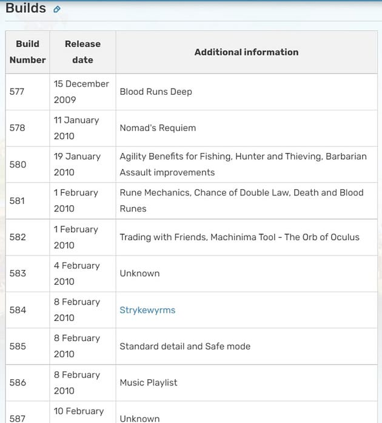
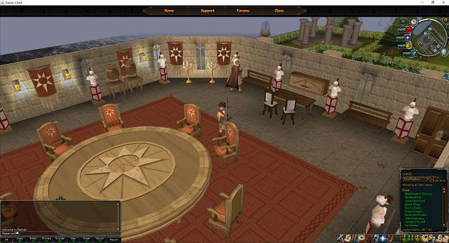

The above is a Runescape Classic Emulator called "Open Runescape Classic". It is one of many Runescape private servers or "rsps" for short. There are plenty of versions ranging from 2001, like this one, to 2021 like this one. In fact there is a whole underground world dedicated to recreating our Runescape experience from every year and I am going to tell you all about it.
The first thing I am going to do is point you to communities you need to know, then I am going to explain the version history of Runescape. Lastly I am going to point you to my personal favorite servers for every era of Runescape. Ready?
Rune-Server
The number one website/community for RSPS today is Rune-Server. Rune-server hosts a forum where creators of Runescape emulators get together, ask each other for advice and play each other's servers. Additionally, they have a discord.
There are hundreds of RSPS which base their server off of Rune-server. The main goal of many of these servers is to make money. Some developers, like myself, just love the thrill of seeing players run their code in the masses.
On the website many developers pay for services from creating GUI, 3D models, networking issues to simple content creation. There are plenty of people who have stuck around for 10+ years to the RSPS scene and many others who are coming in for the first time.
Runelist, Runelocus & Others
Like Rune-Server there are other websites/communities which are, in 2021, not as popular but are notable. Runelist is relatively new and an up and coming forum. Runelocus is an old favorite which has been empty for a while but still has plenty of forum content to browse for older versions of Runescape.
Something to note about these forum/communities, is that they usually include a top tier list for RSPS servers. This, in particular, is kept up by servers using a voting system similar to how Minecraft top lists work. In-game of the RSPS you vote for the server and the rankings change based on the total votes.
Versions Histories of Runescape
Every few weeks for the past 18 years or so, maybe more, Jagex developers have been releasing a new updates of Runescape into the world wide web. The version of Runescape with each update is known as a, well, "version". Each version is different and has a chronological order to them.
Other names include "Build" and "Revision" on top of "Version", as we know it. Going all the way back to 2003, maybe even earlier, there are version numbers or build numbers or revision numbers which count from 100–900+. They have a date attached to them and a list of patch notes.
Version # Matters
These version histories is how every RSPS organizes what content they have in-game. In fact on every forum the RSPS displays the revision number right next to it to tell you what year of Runescape the server is emulating.
The world, 3D models, sounds, quests, NPCs, GUI and even client are chosen by this all powerful revision number. The server has to work around this version of Runescape and can either stick to remaking that year or add its own mods to the game.
How Did They Get All the Runescape Assets Though?
Behind the scenes, as it turns out, Runescape has been uploading all their game assets to YOUR computer all these years with every update, every time you open their client. Because of this people have been able to copy and paste the assets into a zip file and store them for safe keeping.
Additionally, the game client has been given to you. So with that, you have all you need to create an RSPS, given you are a technical coding genius. Here is how its done…
What You Need to Make an RSPS From Scratch
The client: There is software to turn the client at every revision back into code and as long as it matches the game assets.
The game assets, AKA "cache": There is a way in any programming language to read the cache using file reading libraries just like reading a text file in notepad but with a coding language. It is not as hard as it sounds but you can send these assets to the client, so long as the revisions match. Crazy enough, even if they don't match, many times it will still work!
The server: This is the most time consuming part. You are making this from complete scratch without the communities above and can do it from almost any general purpose language. Here you accept the game assets and manipulate them by sending them to every client out there.
This is the middle man for every game client connected. If the revision matches between the client and game assets, this server should work fine.
And that's it! That is why every RSPS has to base its description around the revision number of the game assets and client. These RSPS are built mostly in Java.
Conclusion
Now you are more informed about Runescape private servers. Armed with this knowledge you can make a judgement for yourself about these Runescape private servers. So, I will leave you with my favorites for every era in the resources list.
Enjoy your Runescape journey! Happy Coding!
Resources
Rune-server: rune-server.org
Runescape Classic: https://rsc.vet/
Runescape 2005: scape05.com
Runescape 2007: vidyascape.org
Runescape 2009: https://2009scape.org/
Runescape 2012: https://darkan.org/
Runescape EOC #1: https://velheim.com/
Runescape EOC #2: https://ataraxia-ps.com/